⚠️ Contestat
Afirmații în jurul cărora sursele serioase se despart. Arătăm ambele părți și de ce diferă, iar concluzia o trageți dumneavoastră.
84 verificări, cele mai noi întâi. Vezi și: ❌ Contrazis · ✅ Probat · 🔍 În verificare

Petrolierul El Gaia a luat foc lângă Oman: IRGC spune că a lovit o mină iraniană, CENTCOM spune că a fost atacat cu rachetă și dronă — un dispărut din echipajul indian
Petrolierul El Gaia, sub pavilion panamez și cu echipaj indian, a luat foc în weekendul 13-14 septembrie 2026 în apele din largul Omanului. Media de stat…

Coreea de Nord spune că a lovit toate țintele cu „100% acuratețe” într-un exercițiu cu rachete și drone — Seul confirmă doar lansarea, nu și precizia
Agenția de stat nord-coreeană KCNA a raportat pe 14 septembrie 2026 că un exercițiu cu rachete balistice, rachete de croazieră și drone de atac, desfășurat…
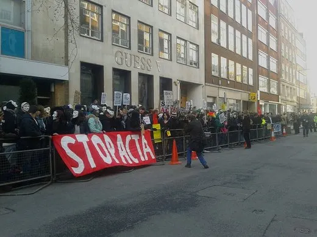
Al doilea protest în șase zile la Bender, lângă postul vamal contestat — Chișinăul îl numește „regizat”, organizatorii de pe malul stâng invocă pierderi de 32 milioane de dolari
Pe 15 septembrie 2026, zeci de oameni s-au adunat lângă un post de control considerat ilegal de autoritățile moldovene, în apropiere de Bender, al doilea…
China majorează de 7,4 ori taxele de viză pentru japonezi, de la 14 septembrie — invocă „reciprocitatea”, dar Japonia le-a majorat pe ale sale de doar 5 ori
🌍 China a anunțat pe 11-12 septembrie 2026 că majorează taxele de viză pentru cetățenii japonezi de aproximativ 7,4 ori, începând de luni, 14 septembrie — de…
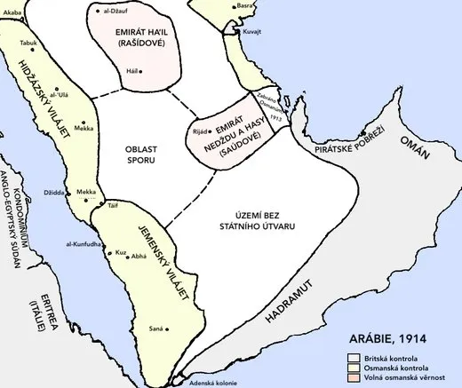
Arabia Saudită spune că pipeline-ul East-West a fost atacat cu drone „provenite din Irak” — dar nu a arătat public dovezi tehnice, iar gruparea responsabilă rămâne neidentificată oficial
📡 Ministerul saudit de Externe, prin agenția de stat SPA, a declarat pe 11 septembrie 2026 că pipeline-ul East-West (7 milioane de barili/zi) a fost țintit…
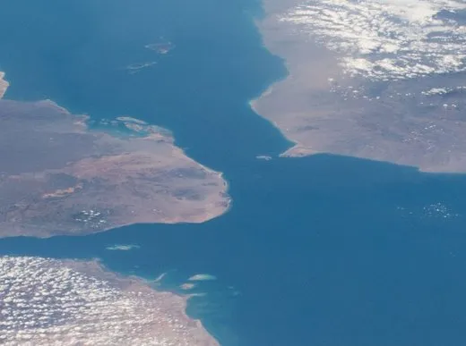
Houthii spun că au control „total” pe Bab al-Mandeb și că navigația e „sigură” — dar traficul naval s-a prăbușit de la 30 la 12 nave pe zi
🌍 După ce au cucerit portul Mocha și insula Perim (Mayyun), houthii susțin, prin oficialul de politburo Hazem al-Assad, că navigația comercială prin…
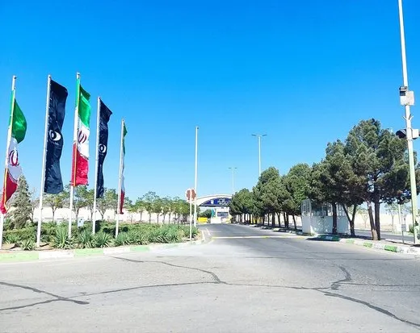
Israelul susține că Iranul a mutat mii de centrifuge la Pickaxe Mountain — AIEA confirmă doar construcții văzute din satelit, fără acces în interior
🌍 Oficiali israelieni și americani, citați de Wall Street Journal, susțin că Iranul ar fi mutat „mii” de centrifuge de îmbogățire a uraniului în tunelurile…

China respinge la Global Times acuzația SUA de „distilare industrială” a modelelor americane de inteligență artificială
📡 Un aviz comun al NSA, CISA și FBI, publicat pe 8 septembrie 2026, acuză șase firme chineze de inteligență artificială — DeepSeek, Moonshot AI, Alibaba…
Avionul lui Zelenski „aproape lovit” de o dronă la Chișinău? O zi mai târziu, Oslo și Chișinăul nuanțează: „nu se știe cât de aproape”
Pe 9 septembrie, premierul Norvegiei spunea că avionul lui Volodimir Zelenski „a fost aproape lovit” de o dronă la decolarea din Chișinău. O zi mai târziu…
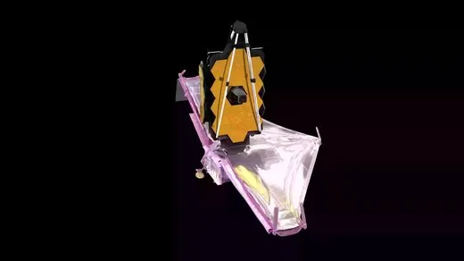
Sondaj printre sute de astrobiologi: doar 6,6% cred că s-a găsit viață extraterestră pe K2-18b
La mai bine de un an de la două anunțuri care au făcut înconjurul lumii — un posibil semnal chimic de viață în atmosfera exoplanetei K2-18b și un „posibil…
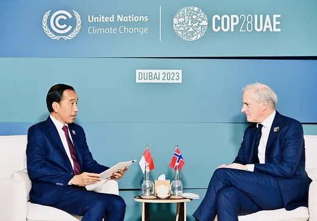
Avionul lui Zelenski, „aproape lovit” de o dronă la decolarea din Chișinău, spune premierul Norvegiei — Guvernul de la Chișinău nu confirmă, și pune accentul pe alt punct al traseului dronei
Premierul norvegian Jonas Gahr Støre a declarat pentru NRK că avionul lui Volodimir Zelenski „a fost aproape lovit de o dronă” la decolarea din Chișinău spre…
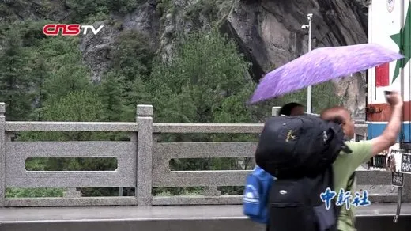
China a sancționat administrativ 10 oameni pentru că au scris online că bilanțul morților din inundațiile din Tibet ar fi peste 1.000, spun Human Rights Watch și activiști tibetani
📡 La aproape două săptămâni de la colapsul glaciar din 26 august care a provocat inundații devastatoare la granița Nepal-Tibet, autoritățile chineze mențin…
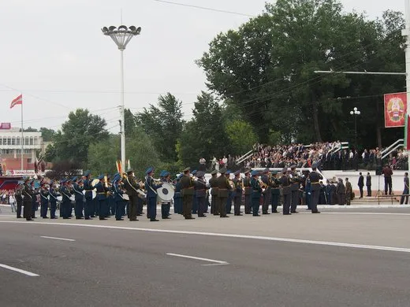
Opt pașapoarte rusești înmânate la Tiraspol, dar ambasadorul Ozerov vorbește de 60.000 de cereri — cifră neconfirmată independent
Ambasadorul Rusiei la Chișinău, Oleg Ozerov, a înmânat pe 8 septembrie 2026, la Tiraspol, primele opt pașapoarte rusești obținute prin procedura simplificată…
China spune că Africa de Sud are excedent comercial, Pretoria spune că are deficit — diferența dintre cifrele oficiale ajunge la 17 miliarde de dolari
Vama chineză a raportat, pentru primele șapte luni din 2026, un comerț bilateral de 37,8 miliarde de dolari cu Africa de Sud, cu un excedent de 5 miliarde de…
India anunță 7,8% creștere a PIB — un fost secretar de Finanțe spune că, fără o revizuire contabilă, cifra reală ar fi sub 2,6%
Ministerul indian de Statistică (MoSPI) a anunțat, pe 2 septembrie 2026, o creștere de 7,8% a PIB-ului pentru trimestrul aprilie-iunie 2026 — peste estimarea…

Ministrul israelian al Apărării spune că 80% dintre gazani vor să emigreze; sondajele publicate arată 43-52%
La o conferință Ynet/Yedioth Ahronoth pe 2 septembrie 2026, ministrul israelian al Apărării, Israel Katz, a spus că planul de relocare a populației din Fâșia…
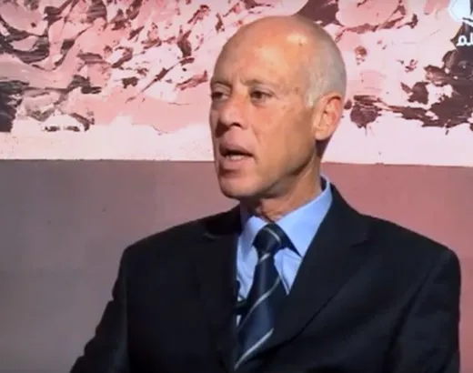
Tunisia: Curtea de Casație confirmă condamnările liderilor opoziției, unele de până la 45 de ani
Curtea de Casație a Tunisiei, cea mai înaltă instanță a țării, a respins joi, 3 septembrie 2026, ultimele apeluri în „procesul complotului” pornit împotriva…
NBC News: hackeri legați de Iran ar fi încercat atacuri cibernetice asupra infrastructurii critice din SUA — fără succes deocamdată; un grup de pe Telegram amenință cu „evenimente neașteptate”
NBC News relatează, pe 2 septembrie 2026, citând patru surse anonime cu acces la informații despre amenințări cibernetice guvernamentale și din industrie, că…
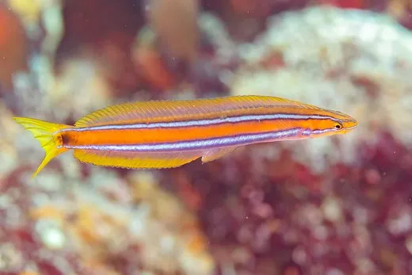
Madagascar: fostul șef al Senatului, condamnat la muncă silnică pentru reprimarea protestelor „Gen Z”
Un tribunal din Antananarivo l-a condamnat, pe 1 septembrie 2026, pe Richard Ravalomanana, general în rezervă și fost președinte al Senatului, apropiat al…
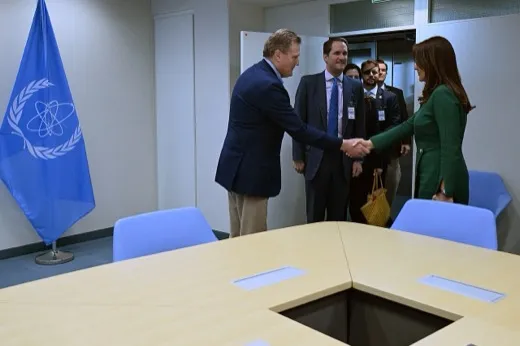
AIEA cere „cu maximă urgență” acces la siturile nucleare iraniene bombardate în 2025 — Teheranul spune că nu a decis nimic în acest sens
Într-un raport trimestrial văzut de agențiile de presă pe 1 septembrie 2026, directorul general al Agenției Internaționale pentru Energie Atomică (AIEA)…
Doi oficiali americani anonimi acuză gigantul chinez de transport maritim COSCO că folosește echipamente ascunse pentru spionaj; Beijingul respinge acuzația ca „total nefondată”
Reuters relatează, pe 1 septembrie 2026, citând doi oficiali anonimi din administrația Trump, că firma chineză de stat COSCO ar folosi echipamente ascunse pe…
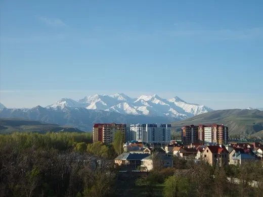
Presa de stat iraniană spune că summitul OCS a condamnat „în unanimitate” agresiunea americano-israeliană. Declarația semnată la Bishkek nu numește nici SUA, nici Israelul
📡 Liderii Organizației de Cooperare de la Shanghai (OCS/SCO) au semnat pe 1 septembrie 2026, la Bishkek, o declarație comună care condamnă „loviturile…
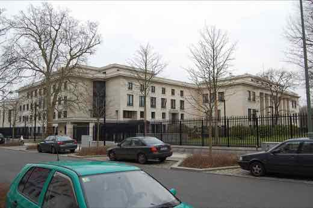
China cere Japoniei să „pedepsească aspru” militarul demis după ce a pătruns cu un cuțit în ambasada chineză din Tokyo. Ce arată sursele independente japoneze
🇨🇳 Ce SUSȚINE presa de stat chineză (CGTN, Xinhua, Global Times): că demiterea, pe 28 august 2026, a unui ofițer al Forțelor de Autoapărare japoneze care a…
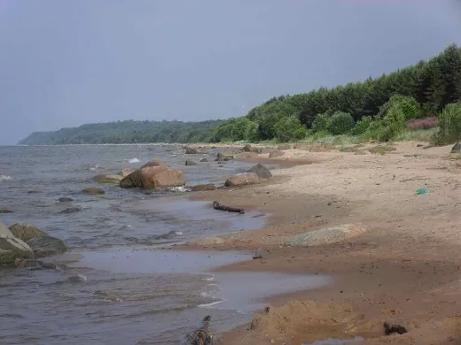
TASS: un activist pro-rus acuză Moldova că transportă armament pentru Ucraina pe calea ferată. Calea Ferată a Moldovei spune că sunt doar cereale
Pe 26 august 2026, agenția de stat rusă TASS a preluat declarația lui Dmitri Sorokin, șeful unei organizații pro-Kremlin de la Sankt Petersburg, potrivit…

Președintele Parlamentului iranian contestă public cifra secretarului Trezoreriei SUA despre petrolul din Hormuz
Ce SUSȚINE presa de stat iraniană (PressTV): că președintele Parlamentului, Mohammad Bagher Ghalibaf, a demontat public cifra de „130 de milioane de barili”…
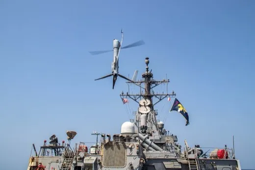
Garda Revoluționară iraniană susține că are control „complet și decisiv” asupra Strâmtorii Hormuz — CENTCOM spune că nava americană escortează, nu Iranul, traficul naval
Marina Gărzii Revoluționare (IRGC) a declarat pe 28 august 2026, prin presa de stat iraniană PressTV, că menține control „complet și decisiv” asupra…

Presa de stat iraniană: armata a trecut la o doctrină „ofensivă” și numește atacul asupra bazei americane din Iordania „acțiune preventivă legitimă”. Ce spune Rezoluția ONU 2817
Ce SUSȚINE presa de stat iraniană (PressTV): generalul Mohammad Akraminia a declarat pe 26 august 2026 că armata iraniană a trecut de la o doctrină…
Ceban spune că apa de pe Nistru e „sperietură” a autorităților. În aceeași zi, Comisia moldo-ucraineană reducea deversările de urgență la 60 m³/s
Primarul Chișinăului, Ion Ceban, a acuzat pe 28 august autoritățile centrale că „sperie oamenii” cu o criză a apei pe Nistru care, spune el, nu există — la…
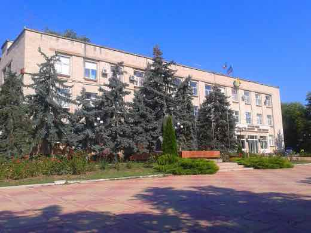
Parlamentul de la Chișinău schimbă regulile alegerilor din Găgăuzia. Comratul spune că autonomia „își pierde competențele”
Pe 24-25 august 2026, Parlamentul Republicii Moldova a votat în lectură finală modificări la Codul electoral care schimbă, începând cu următorul ciclu…

Iran: oficialii petrolului spun că lipsa benzinei e „doar zvon”, chiar când vicepreședintele anunță scumpiri
În aceeași săptămână, doi oficiali din industria petrolului iraniană (NIOC) au numit „nefondate” zvonurile despre lipsa benzinei, în timp ce vicepreședintele…
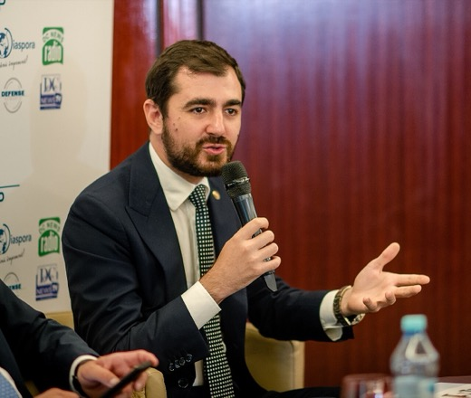
Zaharova, la TASS: Chișinăul „predă țara Bucureștiului”, după numirea lui Claudiu Năsui în guvernul R. Moldova
Fostul ministru român al Economiei Claudiu Năsui a fost numit șef al Ministerului Dezvoltării Economice și Digitalizării de la Chișinău, după ce a primit…
China își cheamă cetățenii să plece din Eswatini, ultimul aliat african al Taiwanului. Guvernul din Eswatini respinge motivul „securitate” ca „nefondat”
📡 Departamentul consular al Ministerului chinez de Externe a emis marți, 25 august 2026, un avertisment prin care cere cetățenilor chinezi din Eswatini să…

Gharibabadi anunță un culoar temporar de 7 mile prin Hormuz, dar spune explicit: „nu înseamnă redeschiderea completă” a strâmtorii
📡 Viceministrul iranian de externe pentru afaceri juridice și internaționale, Kazem Gharibabadi, a declarat pe 26 august 2026 că înțelegerea Iran-Oman pentru…
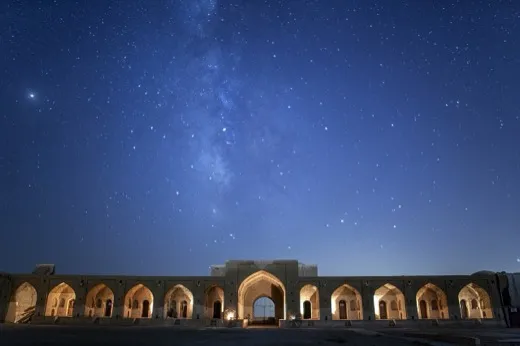
IRGC spune că Iranul și Omanul „au căzut de acord” pe împărțirea veniturilor din Hormuz. Declarația comună a celor două state vorbește doar de un „cadru interimar”
📡 Purtătorul de cuvânt al Corpului Gărzilor Revoluționare (IRGC), Hossein Mohebbi, a declarat pe 26 august 2026 că Iranul și Omanul „au ajuns la un acord”…
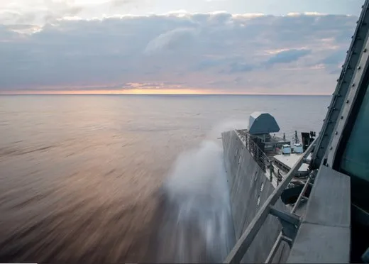
Armata chineză acuză Filipine de „provocări” în Marea Chinei de Sud — a treia oară în 2026 cu același scenariu
📡 Ce SUSȚINE presa/armata de stat chineză (Global Times, Xinhua, China Daily — media de stat din R.P. Chineză): Comandamentul de Teatru Sudic al Armatei…
Trump spune că a scos toate minele din Hormuz. Teheranul spune că strâmtoarea rămâne închisă, în ciuda acordului cu Omanul
🌍 Miniștrii de externe ai Iranului și Omanului au convenit marți, 25 august 2026, la Teheran, un cadru pentru un culoar naval temporar și un proiect comun de…
Termenul dat de Casa Albă guvernatoarei Fed Lisa Cook să răspundă acuzațiilor de fraudă ipotecară expiră mâine
Casa Albă i-a dat guvernatoarei Rezervei Federale, Lisa Cook, termen până miercuri, 26 august 2026, să răspundă acuzațiilor de fraudă ipotecară aduse de…
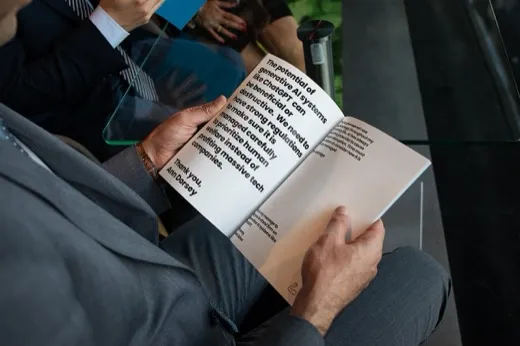
Presa de stat iraniană citează pe președintele Parlamentului spunând că Iranul a obținut „victorie adevărată” în războiul cu SUA și Israelul — bilanțul independent arată un tablou mult mai amestecat
📡 Președintele Parlamentului iranian, Mohammad Baqer Qalibaf, a declarat pe 16 august 2026, citat de agenția de stat PressTV, că Iranul a obținut „victorie…
USR cere din nou anchetă disciplinară în Camera Deputaților, pe motiv că un amendament la legea ANI ar fi fost „introdus pe sub mână”
USR susține că un amendament la legea ANI a apărut în raportul Comisiei juridice a Camerei Deputaților atribuit fals comisiei, fără să fi fost depus…
Petro a acuzat public „fraudă algoritmică” la alegerile din Colombia, dar propria lui cerere în instanță spune că nu există fraudă dovedită
Fostul președinte columbian Gustavo Petro a susținut public, la începutul lunii august 2026, că alegerile prezidențiale din 21 iunie au fost afectate de o…

Zelenski spune că Rusia ar putea primi până la 50.000 de soldați nord-coreeni suplimentari. Phenianul neagă, Seulul nu vede semne
Volodimir Zelenski a ridicat, pe 8 august, estimarea privind soldații nord-coreeni pe care Rusia i-ar putea primi la 30.000-50.000, fără să spună pe ce…

Trump spune că economia americană „n-a fost niciodată mai puternică” și că ar câștiga „cu 25 de puncte” — datele oficiale arată o încetinire
Într-un interviu de împăcare cu fostul său avocat Michael Cohen, difuzat integral duminică, 23 august 2026, pe 77 WABC, Donald Trump a spus despre economia…
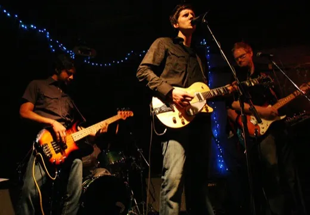
Legea salarizării: valoarea de referință scade la 4.000 de lei — Cartel Alfa spune că noua formă e „mai proastă decât toate cele anterioare”
Varianta legii salarizării discutată la Cotroceni pe 20 august coboară valoarea de referință pentru salariile bugetarilor la 4.000 de lei — a treia reducere…
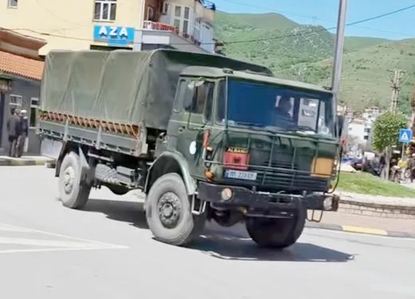
Coreea de Nord acuză bugetul record de apărare al Japoniei că e „pregătire pentru un război de agresiune”
Ce SUSȚINE presa de stat nord-coreeană (KCNA, citând un comentariu din ziarul de partid Rodong Sinmun): că majorarea bugetului de apărare al Japoniei la 8,9…

Liderul suprem al Iranului nu a mai apărut public din martie. Presa de stat spune că e activ, un videoclip de 15 secunde nu a lămurit nimic
Mojtaba Khamenei conduce Iranul din 8 martie 2026, după ce tatăl său, Ali Khamenei, a fost ucis într-un atac israelian pe 28 februarie, în prima zi a…
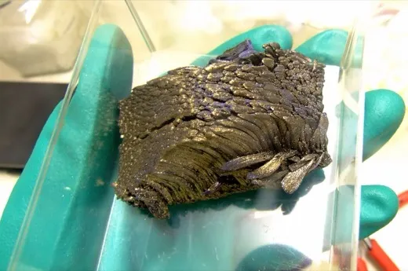
Global Times spune că Japonia e de vină pentru prăbușirea importurilor de disproziu — dar omite interdicția pe care chiar China a impus-o oficial
Global Times SUSȚINE, pe 21 august 2026, citând „experți chinezi”, că prăbușirea cu 82% a importurilor japoneze de disproziu în prima jumătate a lui 2026 se…

Pezeshkian cere încheierea războiului „dintr-o poziție de putere”, în timp ce economia iraniană se contractă și inflația atinge aproape 70%
Președintele iranian Masoud Pezeshkian a spus vineri, 21 august 2026, că e mai bine ca Teheranul să încheie acum războiul cu SUA și Israel, „cât suntem…

Comisia de anchetă pe întâlnirea Bolojan–Tănăsescu, aprobată în comisie — PNL și USR se opun trimiterii ei în plenul Senatului
Marți, 18 august 2026, Comisia pentru constituționalitate a Senatului a votat, cu 6 voturi din 9 (PSD, AUR, PACE — Întâi România), inițierea unei anchete…
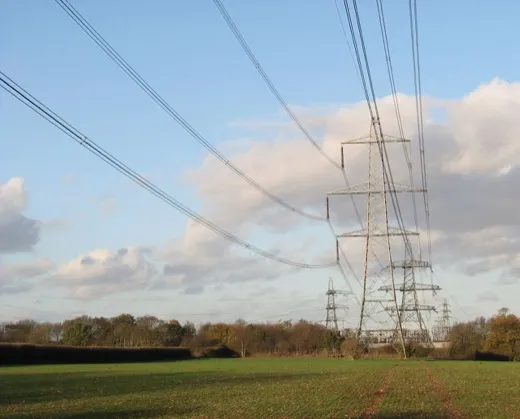
Bogdan Ivan spune că industria a primit notificări de limitare a curentului, Ministerul Energiei și Bolojan resping alarma de „blackout”
Fostul ministru PSD al Energiei, Bogdan Ivan, a scris pe 19 august că marii consumatori industriali au primit notificări de limitare a curentului, numind…

Trump spune că un raport al Census Bureau arată 24.000 de non-cetățeni care au votat ilegal în 2020 — experții contestă metodologia
Președintele Trump a susținut pe rețelele sociale că o analiză nepublicată a Census Bureau arată aproximativ 24.000 de voturi ale unor non-cetățeni în…

Guvernul yemenit anunță 81 de atacuri „reușite” asupra Houthi într-o zi. Houthi anunță lovituri asupra Arabiei Saudite. Niciuna nu e confirmată independent
🌍 Pe 20 august 2026, guvernul yemenit recunoscut internațional a raportat 81 de atacuri asupra pozițiilor Houthi într-o singură zi, susținând că a…
Trump spune că Coreea de Nord are „57” de focoase nucleare — Seul estimează între 80 și 120
Trump a citat, miercuri, cifra de 57 de focoase nucleare nord-coreene, apărându-și relația cu Kim Jong Un. Joi, ministrul apărării sud-coreean a spus în…
Legea salarizării, blocată din nou: întâlnirea de la Cotroceni s-a încheiat fără acord, după patru ore de discuții pe un gol de 5 miliarde de lei la Educație
Marți, 18 august, ministrul Dragoș Pîslaru a trimis proiectul legii salarizării la Comisia Europeană înainte ca liderii partidelor să vadă forma finală, iar…

Președintele Taiwanului acuză China de „sondaje false” în cursa pentru Kaohsiung. Presa de stat chineză neagă și vorbește de „zvonuri” inventate de Lai
Președintele taiwanez William Lai Ching-te a susținut, pe 12 august 2026, la o ședință a Comitetului Central al DPP din Kaohsiung, că R.P. Chineză…
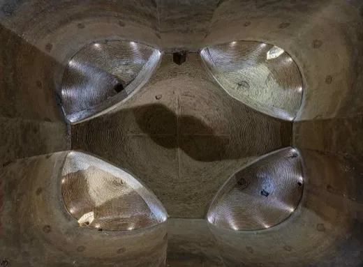
Iran declară doi diplomați francezi „persona non grata”, acuzându-i de „infiltrare”; Franța vorbește despre un atac „premeditat”
Ce SUSȚINE presa de stat iraniană (PressTV/IRNA, citând Ministerul de Informații): că doi angajați ai ambasadei Franței la Teheran conduceau un „proiect de…
Grindeanu spune că România se împrumută „cu 1.000 de euro pe secundă” — ce arată calculul pe cifrele Ministerului Finanțelor
La o conferință de presă ținută joi, 13 august 2026, la 100 de zile de la demiterea Guvernului Bolojan, liderul PSD Sorin Grindeanu a declarat că premierul…

Manda îi cere demisia lui Bolojan și acuză „cea mai drastică” scădere a puterii de cumpărare din ultimii 15 ani — ce confirmă datele INS și ce nu
Secretarul general al PSD, europarlamentarul Claudiu Manda, i-a cerut vineri, 14 august 2026, demisia premierului interimar Ilie Bolojan, la peste 100 de…

Sindicatul de la metrou amenință cu oprirea circulației în septembrie, dacă Guvernul nu plătește compensația restantă de 450 de milioane de lei
Sindicatul Liber din Metrou (USLM) a avertizat, pe 19 august 2026, că circulația metroului bucureștean riscă să se oprească în septembrie dacă Ministerul…

Legea salarizării: Comisia Europeană cere plafonarea la 12,1 miliarde de lei, după cinci ore de negocieri la Bruxelles
Miercuri, 19 august 2026, reprezentanți ai Guvernului au negociat peste cinci ore cu Comisia Europeană pe tema impactului bugetar al legii salarizării…
Surse: Pîslaru a trimis la Bruxelles o nouă formă a legii salarizării, fără liderii coaliției de la Cotroceni
Antena 3, citând surse din negocieri, susține că ministrul interimar al Muncii, Dragoș Pîslaru, a trimis Comisiei Europene o nouă variantă a Legii…